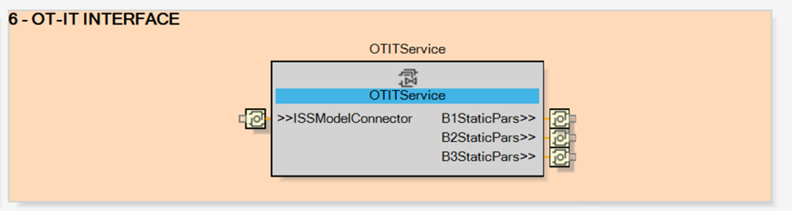

Similarly to the field interface, this is the point of (bidirectional) access from and to the IT world.
The OTITService function block contains the implementation of the specific communication mechanism used to establish the connection.

This function block contains not only the connection service itself, but also all the functionalities needed to build an adequate message body with a particularly well-structured semantics.
The objective is to facilitate as much as possible the configuration and interpretation of the data once those have been “uploaded” into the IT.
From the interface, two categories of data exchange are available:
UPSTREAM (from the OT to the IT); the idea is to send all relevant data stream produced inside the sub-system (e.g. the field signals it manages directly through its field interface) but enhanced with contextual information about the status of the sub-system in parallel to that stream.
For example, certain spikes in the reading of field signals are associated with a change in the state of certain functional behaviors. The content of this stream is defined inside the core CAT of the Subsystem logics.
DOWNSTREAM (from the IT to the OT); for each of the behaviors included in the sub-system, it is possible that the corresponding static parameters can be set outside of the EcoStruxure Automation Expert world in another IT process and then sent to configure the behavior. This is where such an information stream crosses the boundaries between IT and OT.